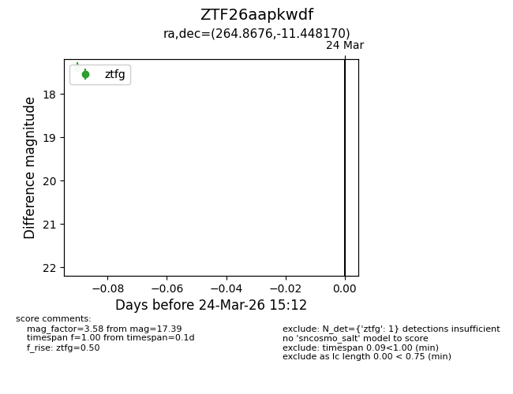
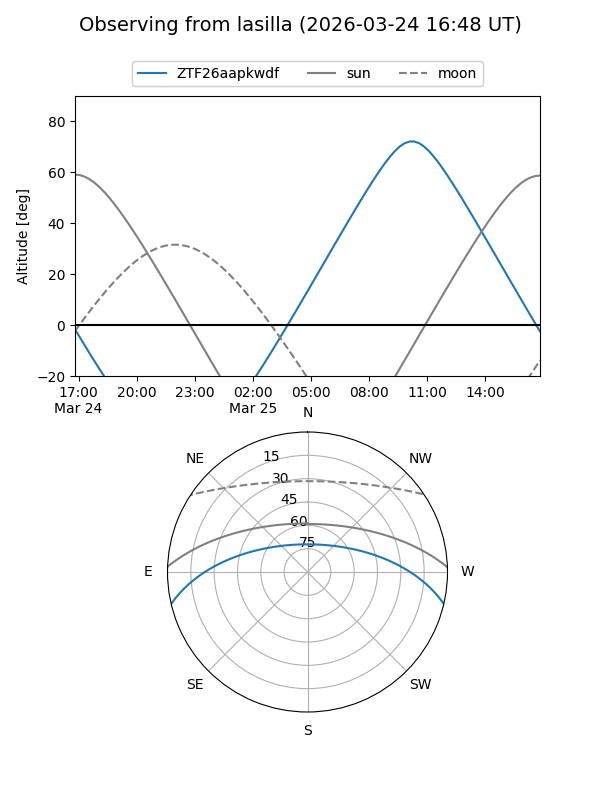
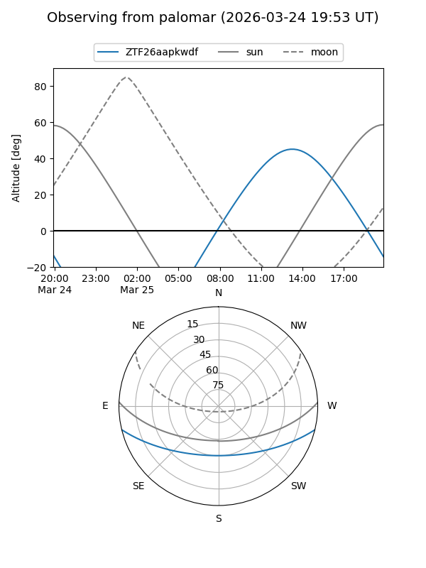

ZTF26aapkwdf
Target ZTF26aapkwdf at 2026-03-24 15:15
Aliases and brokers:
FINK: link
Lasair: link
ALeRCE: link
alt names
ZTF26aapkwdf (ztf,fink_ztf)
Coordinates:
equatorial (ra, dec) = 264.8676,-11.44817
equatorial (HMS+DMS) = 17:39:28.23,-11:26:53.41
galactic (l, b) = (14.2780,+10.30728)
Flags:
Photometry:
last ztfg=17.39
1 ztfg detections
Lightcurve

Visibility


Additional plots